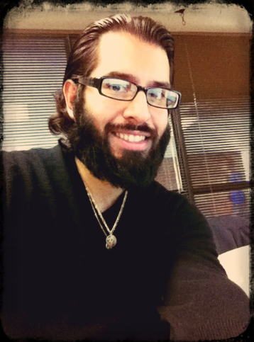

|  |
First and foremost, I want to thank you for visiting my website. Without support from my family, friends, and followers, I would not be the enthusiastic, motivated individual I am today. Additionally, I want to the thank the deities above for their patience, wisdom, and guidance during my existence in this lifetime. For they illuminated my path with experiences and adventures for my well=being and progression. I'm currently a second-year graduate student pursuing a Master's degree in Intercultural/International Communication at the University of Florida. With a strong interest in developing New Age/Pagan awareness in the United States and across the world, I have become an avid blogger and media producer on the topic. In addition, I have been contributing my knowledge and skills across all areas in the professional workplace and academia. In my free time, I enjoy meditating, composing/performing/listening to music, painting, reading Hindu and Wiccan/Pagan texts, traveling, watching sports, and spending time with my family. An important hobyy of mine is to collect different types of incense, as I enjoy the power, mysticism, and magical representation of the fire element through smoke. DISCLAIMER FOR HUMANITY: Please respect all faiths, paths, and ideals. If you do not agree with a person's beliefs, or are quick to "judge a book by its cover", please reflect on your present spiritual and physical well being. All the negative energy spent on thinking of others, should be focused on bettering oneself. If one has time to judge others, then one hasn't given enough time to think of oneself. Hometown: Elizabeth, New Jersey Cultural Roots: Argentine Sign: Aquarius Recommended Books: The Bhagavad Gita, The Namesake, Wicked, Riding on a Silver Broomstick, Wicca: A Guide for the Solitary Practioner, Many Lives; Many Masters |